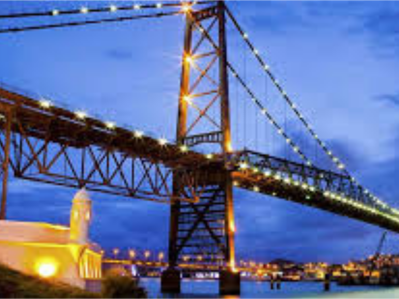
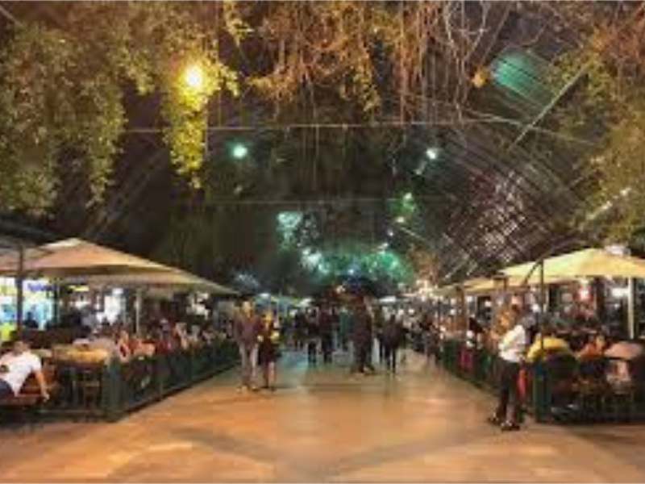
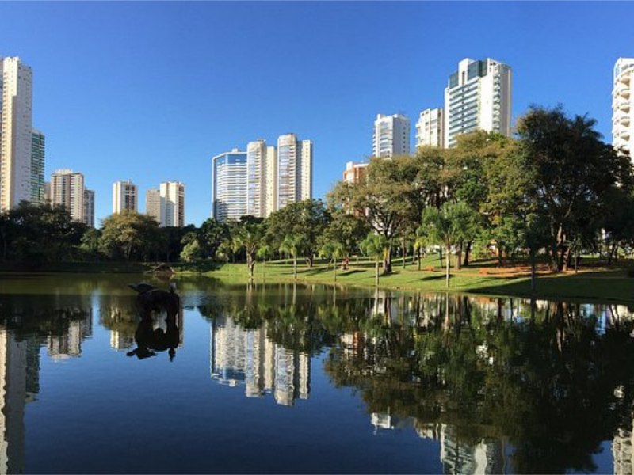
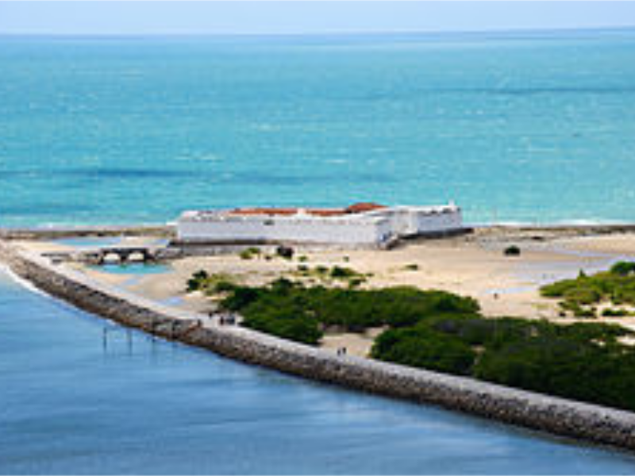
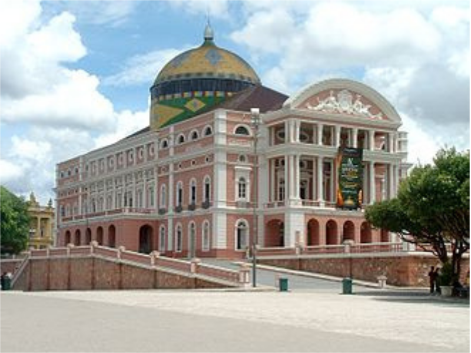
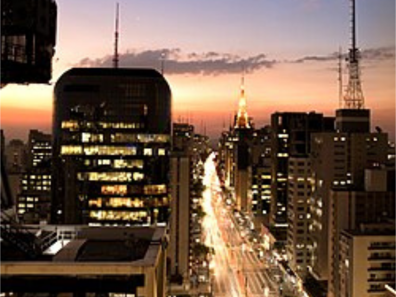
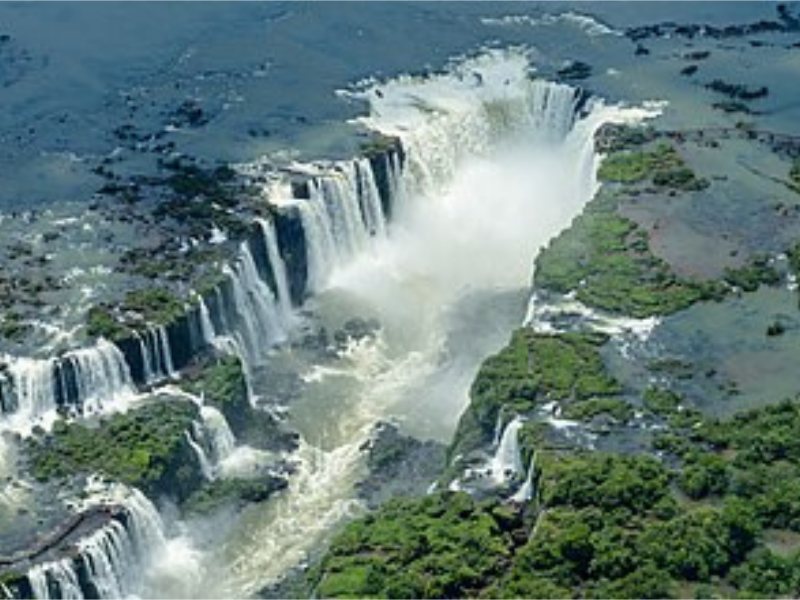
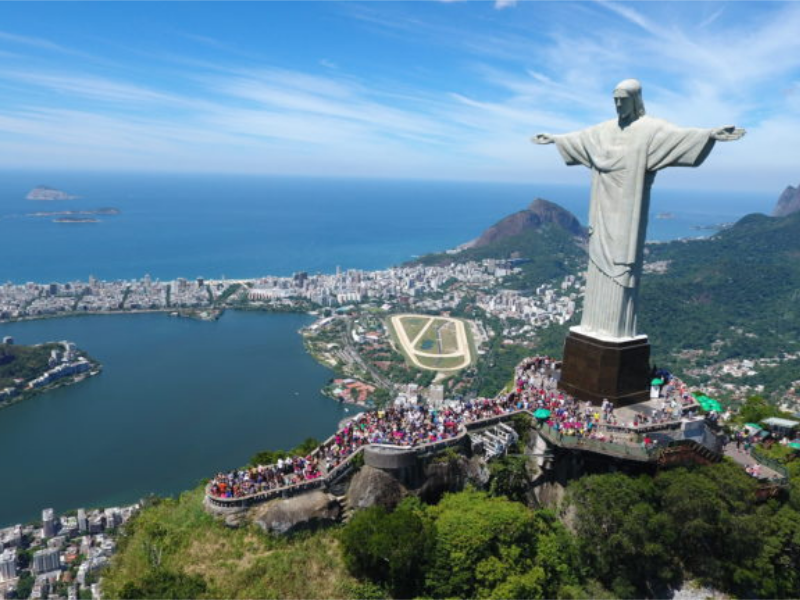

As Cidades
Conheça os principais pontos turísticos das cidades que sediarão as maratonas de 2025 e 2026:

Florianópolis
Ponte Hercílio Luz — cartão-postal histórico da capital catarinense.
Ponte Hercílio Luz — cartão-postal histórico da capital catarinense.

Gramado
Rua Coberta — passeio charmoso com lojas e cafés tradicionais.
Rua Coberta — passeio charmoso com lojas e cafés tradicionais.

Goiânia
Parque Flamboyant — refúgio verde em meio à capital goiana.
Parque Flamboyant — refúgio verde em meio à capital goiana.

Natal
Forte dos Reis Magos — marco histórico à beira-mar.
Forte dos Reis Magos — marco histórico à beira-mar.

Manaus
Teatro Amazonas — símbolo da era da borracha e da cultura amazônica.
Teatro Amazonas — símbolo da era da borracha e da cultura amazônica.

São Paulo
Avenida Paulista — o coração financeiro e cultural da metrópole.
Avenida Paulista — o coração financeiro e cultural da metrópole.

Foz do Iguaçu
Cataratas do Iguaçu — uma das sete maravilhas naturais do mundo.
Cataratas do Iguaçu — uma das sete maravilhas naturais do mundo.

Rio de Janeiro
Cristo Redentor — o monumento mais icônico do Brasil.
Cristo Redentor — o monumento mais icônico do Brasil.